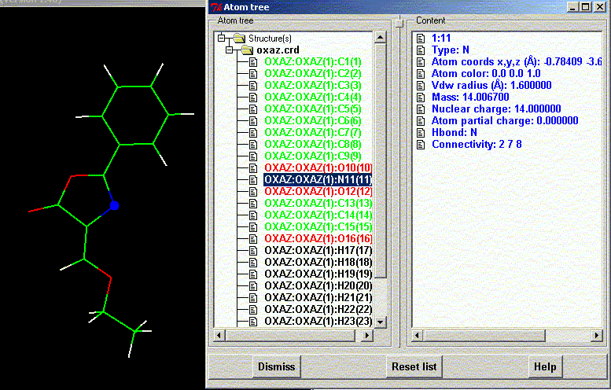

**************************************************************************
Atom tree widget
Leif Laaksonen CSC 2000
**************************************************************************
Browse through the atoms in the molecule. When you open the "Atom tree" you get a window with two separate widgets. The left "Atom tree" lists the structures. Clicking on the "+" sign opens the structure and shows the atoms. Double clicking on an atom shows the atom information in the right widget. At the same time the atom is "clicket" in the graphics window and the atom is marked with a small sphere at the atom. This means that the atom has been "picked" and can be draged into other input widgets.
If you click on an atom ("Ctrl"-key and left mouse button) in the graphics window that atom will also be selected in the "Atom Browser" widget and the atom details will be shown.
The clicked atom list can be reset by pressing the "Reset list" button or by pressing the "End" button on the keyboard. The graphics window has to be selected (clicked) before this works.

Line command: see no line command available
**************************************************************************
LUL/2000
**************************************************************************